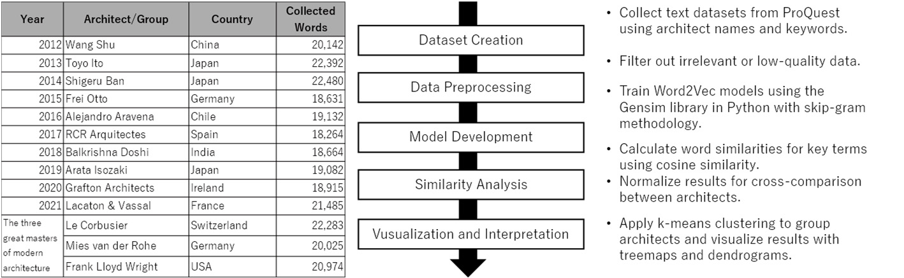
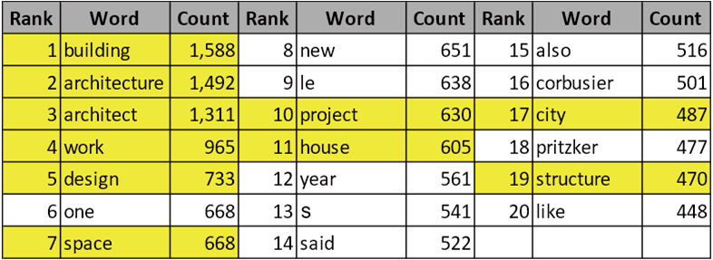
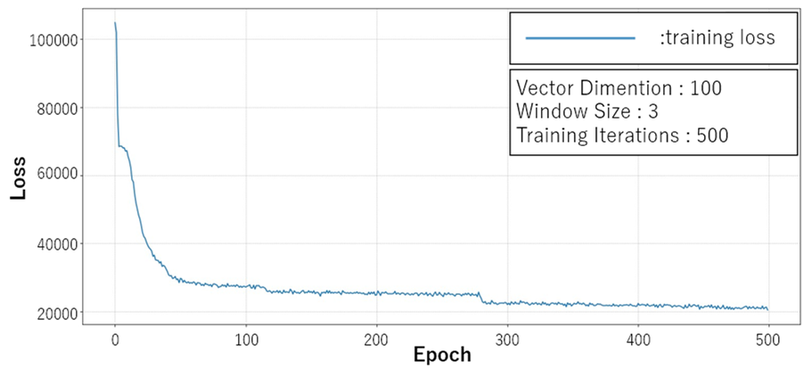
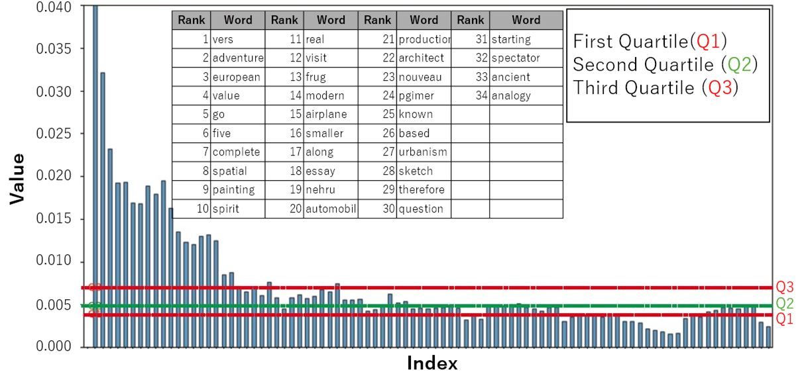
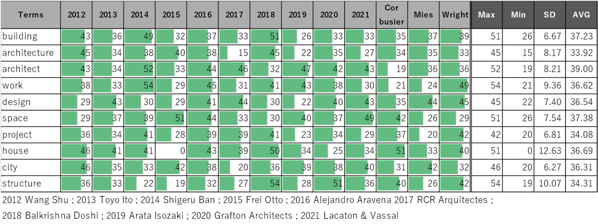
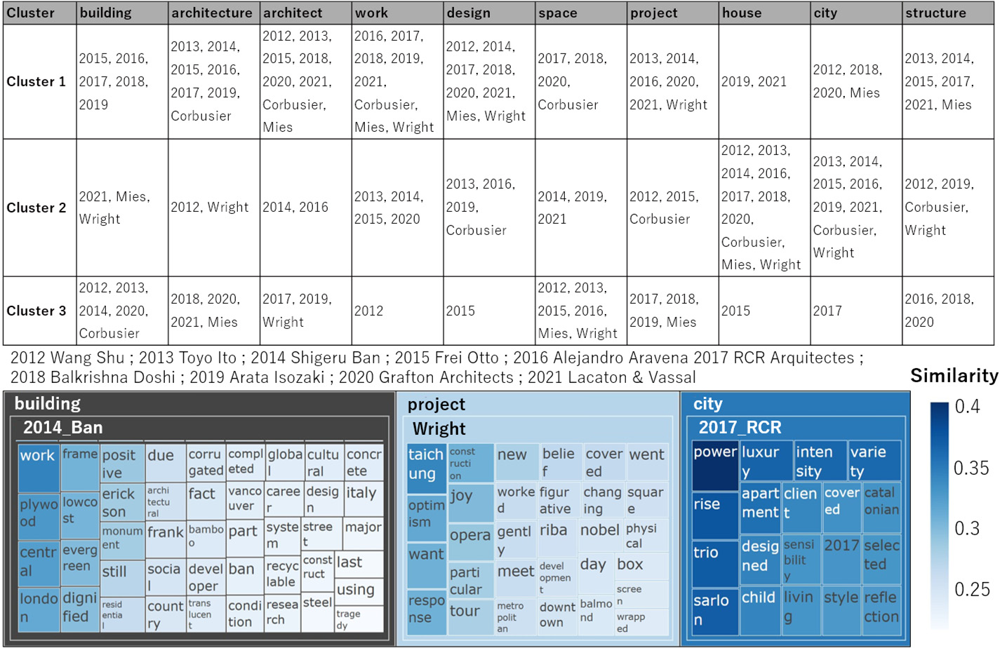
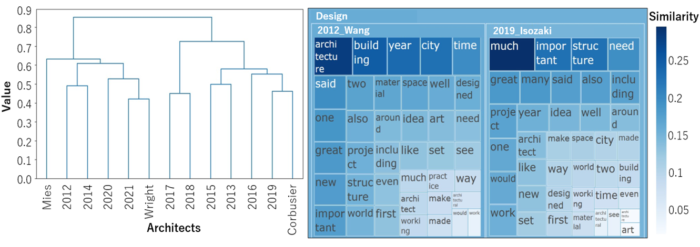

Abstract
This paper proposes a novel approach that leverages artificial intelligence to quantitatively analyse the ‘image of the architect’ as it appears in academic discourse. This method employs neural networks to examine linguistic expressions associated with architects and their works within a socio-cultural context.
Using Word2Vec, a natural language processing technique, we investigated word-usage patterns related to Pritzker Prize laureates and influential modern architects, including Le Corbusier, Mies van der Rohe, and Frank Lloyd Wright. By employing the skip-gram model in Word2Vec, the semantic relationships between the linguistic expressions associated with different architects were identified, providing insights into their perceptions in academic texts.
A vocabulary-trend analysis revealed commonalities and differences in their perceptions, highlighting the unique perspectives of each architect and their associated keywords. Furthermore, a cluster analysis was employed to visualise the distinct associations between their architectural approaches, philosophies, and particular terms, facilitating a deeper understanding of the relationship between language and architecture.
1. Introduction
1.1. Words in Architecture
This study focuses on two main aspects. The first is the crucial role of ‘words’ in architecture. They are indispensable for shaping and comprehending architectural concepts. Investigations of literature and historical materials have revealed that the vocabulary associated with modernist architecture has evolved over time and is subject to diverse interpretations by architects. Numerous studies have qualitatively examined architectural language to understand the theories and philosophies of architects.
Research has demonstrated the potential to understand how architects consider different factors and develop unique design processes through their language. Although these findings are valuable, they often lack objectivity. To address this issue, recent advancements in quantitative word-analysis techniques, such as text mining, have gained prominence. Although various studies have actively employed these techniques in other fields, their application in the field of architecture is limited.
1.2. Reception of Architects by Non-Architects
The second focus of this study is ‘the reception of architects by non-architects’. A discrepancy often exists between the intentions of architects when designing buildings and the impressions derived by non-architects from them. Architects are sensitive to subtle design differences and highly value originality, whereas non-architects tend to perceive designs more simplistically.
Considering that architecture encompasses not only creativity but also public and social dimensions, understanding how non-architects perceive and interpret architecture is crucial.
1.3. Related Work
A study that focuses on both ‘words’ and ‘architectural images as accepted by non-architects’ is ‘The Reception History of John Ruskin’. This study qualitatively examines how John Ruskin was historically received in America, not through Ruskin’s own discourse but through extensive third-party discussions. Considering the publicness and sociality of architecture, this highlights the importance of understanding how people perceive architecture.
1.4. Research Objectives
To address the aforementioned gaps, we first collected extensive language expressions related to architectural images through Web scraping. Next, instead of relying on simple word frequencies or co-occurrence probabilities, we employed deep-learning-based text mining, which considers context, to analyse the word similarities for each architect. This approach allowed us to identify words with high similarity to a representative ‘word’ as a concept, which was then interpreted as a factor influencing that word.
For example, consider the word ‘building’. The concept of ‘building’ within an architectural image is subjective and varies among architects. In one architectural image, the primary factor associated with ‘building’ might be ‘form’, whereas in another, it could be ‘materials/structure/thought’, among others. This study presents the composition of such concepts for each architect and a representative concept.
2. Research Overview
2.1. Research Flow

This study followed a structured process, including the collection of texts related to Pritzker Prize laureates (2012–2021) and modern architectural masters, preprocessing the data, training Word2Vec models, and analysing word similarities. Key trends and unique features were visualized using clustering techniques and diagrams to uncover linguistic patterns in academic discourse.
2.2. Dataset
Clarivate’s ProQuest platform, which is one of the largest and most reliable academic information databases, was used to create the text dataset. ProQuest provides access to various sources, including academic journals, newspaper articles, dissertations, books, and reports, allowing comprehensive cross-referencing of 13 databases. The search was conducted using the architect’s name along with the term ‘architect’, and only articles in English with full-text access were selected. Each dataset comprised 18,000–22,000 words per architect, thereby providing a robust foundation for text analysis.
2.3. Model and Learning Conditions
Word2Vec uses neural networks to represent words as real-valued vectors (i.e., word embeddings). By obtaining distributed word representations, it enables the quantification and exploration of similarities between words. In this study, the skip-gram method was used to predict the words surrounding the target word. Skip-gram is particularly effective in capturing rare-word associations. The vector dimensions were set to 100, window size was set to 3, and number of training iterations was set to 500. A separate Word2Vec model was created for each architect.
2.4. Selection of Substituted Words

The trained model output similarities with other words in the text by substituting specific words. For these substituted words, we selected ten words representing concepts related to architecture from among the top 20 most frequent words in the dataset: building, architecture, architect, work, design, space, project, house, city, and structure.
2.5. Output Processing
The similarity between the substituted words was output as a cosine similarity and the values were normalised to a range of 0–1. To conduct a comprehensive analysis of word similarities across different architects and terms, it was necessary to standardise the range of values across all patterns. The moving average was calculated at 10-word intervals based on the difference in similarity rankings of up to 100 words, and the similarity threshold was set at a point immediately before the moving average fell below the median value.
2.6. Interpretation of the Results
The output for each substituted word was interpreted as representing the ‘image of the architect as seen from the perspective of the words’ by people. Additionally, the proportion of words within the effective range for each architect was considered to represent the elements that constituted their image. By comparing the results for each word across different architects, we could discern the trends of how each architect was perceived from different perspectives.
3. Results
3.1. Model Training and Convergence

The training of all Word2Vec models converged successfully, indicating that the models effectively captured the semantic relationships within the text data specific to each architect’s body of work. Using the trained models, we explored similar words for each of the ten representative terms to investigate the nuanced language associated with each architect.
3.2. Determining the Effective Range of Similar Words

After extracting the similar words for each term, we investigated the effective range of similarities to determine an appropriate threshold for selecting meaningful words. The graph shows that the similarity scores decreased as the ranks of similar words increased. The high average number of similar words for ‘architect’ suggests a diverse perception of architects associated with this term, encompassing various perspectives and contexts.
3.3. Analysis of Effective Similar Words

The maximum number of effective similar words was 54, found in Shigeru Ban’s ‘work’ from 2014 and Balkrishna Doshi’s ‘structure’ from 2018. The minimum was 0, observed in Frei Otto’s ‘house’ from 2015, indicating that the term ‘house’ did not appear in his dataset.
Words like ‘house’ and ‘structure’ exhibited large variations in the number of effective similar words across different architects. By contrast, terms such as ‘city’, ‘building’, and ‘project’ showed smaller variations, indicating more consistent usage across different architects.
3.4. Analysis of Common Words

To further understand these trends, clustering was performed on each architectural model trained using Word2Vec. Using the 42 common words across all models and their cosine similarities with the ten search terms as feature values, we applied k-means clustering (with three clusters) after normalisation. This approach allowed us to group architects based on linguistic similarities and to identify patterns in how they are discussed in academic discourse.

Differences were observed between architects who frequently appeared in the same clusters and those who did not. For instance, pairs such as Ito and Ban, Doshi and Grafton, and Doshi and Mies were consistently classified together, whereas Wang and Isozaki appeared together only once. Even when the same words appeared as similar terms to ‘design’, the degree of association differed between the two architects.
4. Discussion
The analysis of effective similar words revealed that certain architectural concepts are interpreted differently by various architects. The significant variations in the number of similar words for terms such as “house” and “structure” indicate that these concepts hold different levels of importance or are associated with different ideas in each architect’s work. For instance, Frei Otto’s focused use of “structure” aligns with his specialisation in lightweight structures, whereas Balkrishna Doshi’s broader interpretation suggests a more diverse application of the concept in his work.
The consistent usage of terms such as “city,” “building,” and “project” by different architects underscores their fundamental role in architectural discourse. These concepts appear to be universally significant, reflecting common themes and concerns within the field.
The clustering analysis of common words further highlighted how architects can be grouped based on linguistic similarities. The formation of clusters among certain architects suggests shared perspectives or thematic overlaps in their works. The contrast in the treemaps of Wang and Isozaki’s “design” demonstrates how cultural context and individual philosophy influence the associations with key architectural terms.
These findings contribute to a deeper understanding of the diverse ways in which architects are discussed and perceived, highlighting the importance of considering external perspectives in architectural analysis. Future research could expand this approach by incorporating a broader range of data sources and exploring additional linguistic and cultural factors that influence the perception of architects and their work.
5. Conclusion
In this study, we employed text-mining techniques to quantitatively analyse the image of architects in academic discourse to clarify the diversity of linguistic expressions and the interpretive differences associated with each architect. Specifically, we analysed the vocabulary similarities using Word2Vec, focusing on Pritzker Prize laureates and modern architectural masters such as Le Corbusier, Mies van der Rohe, and Frank Lloyd Wright. The results confirmed that each architect emphasises different concepts, leading to unique portrayals in academic texts.
Furthermore, by applying k-means clustering to the cosine similarity values of shared words, we identified patterns in the classification of architects in relation to each search term. This clustering revealed how specific keywords are associated with each architect, highlighting their unique perspectives and approaches.
A quantitative approach using Word2Vec and clustering techniques was introduced in this study, in place of traditional qualitative analyses, providing a new perspective for evaluating architectural images based on a wide range of text data. Future research should focus on enhancing the data quality by expanding the range of information sources and refining the model to account for finer linguistic nuances and contextual variations.
References
- Bianco, L. (2018). Architecture, values and perception: Between rhetoric and reality. Frontiers of Architectural Research, 7(1), 92–99.
- Cai, C., Wang, X., Li, B. & Herthogs, P. (2024). ArchiSearch: A Text-image Integrated Case-based Search Engine In Architecture Using Self-organizing Maps. In CAADRIA 2024 (pp. 19–28).
- Chen, J., Stouffs, R., & Biljecki, F. (2021). Hierarchical (multi-label) architectural image recognition and classification. In CAADRIA 2021 (pp. 161–170).
- Emoto, H. (2015). The reception history of John Ruskin: Towards a global history of modern architectural thought.
- Forty, A. (2000). Words and buildings: A vocabulary of modern architecture. Thames & Hudson.
- Ilbeigi, M., et al. (2019). Cognitive differences in residential facades from the aesthetic perspectives of architects and non-architects. Sustainable Cities and Society, 51(11), 101760.
- Wong, J. (2010). The text of free-form architecture: qualitative study of the discourse of four architects. Design Studies, 31(3), 237–267.
- Mikolov, T., Chen, K., Corrado, G., & Dean, J. (2013). Efficient estimation of word representations in vector space. arXiv:1301.3781.
- Mondal, J., & Hou, Y. (2022). Quantifying differences between architects’ and non-architects’ visual perception of originality of tower typology using deep learning. In CAAD Futures 2021 (pp. 203–221).
- Yazici, M., & Durmus Ozturk, S. (2023). An analysis of Rem Koolhaas’s discourses on architecture and urban design using a corpus-based model. Frontiers of Architectural Research, 12(2), 222–241.
List of Figures
- Figure 1 — Target architects/architectural groups and research flow
- Figure 2 — Word Cloud and Top 20 Most Frequent Words in the Dataset
- Figure 3 — Training progression of the Word2Vec model (Ito)
- Figure 4 — Effective range of similar words for ‘Architecture’ in Le Corbusier’s context
- Figure 5 — Effective similar word counts and statistical results
- Figure 6 — Architects/groups and synonym treemap by search term
- Figure 7 — Dendrogram and treemap: Wang and Isozaki’s ‘design’